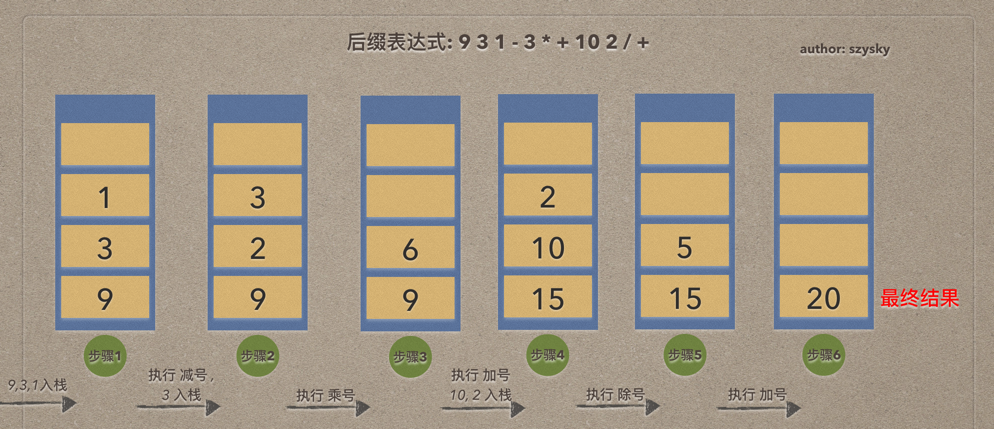
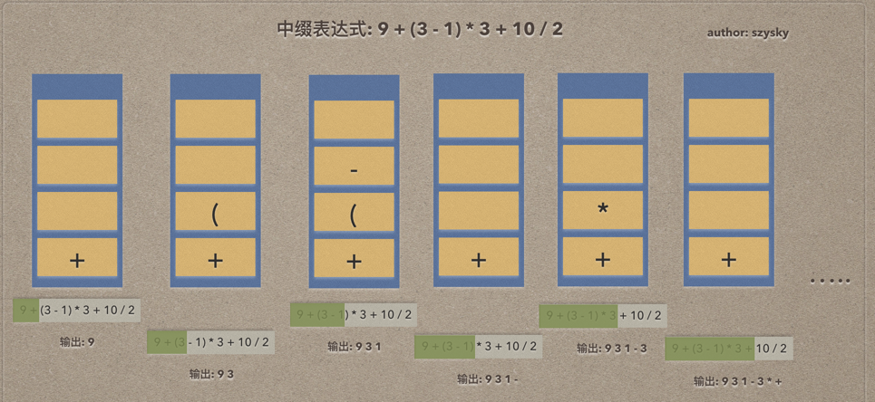

栈的定义
栈(stack)是限定仅在表尾进行插入和删除操作的线性表
通常把插入和删除的一端称作为栈顶(top). 另一端就是栈底(bottom), 不含有任何数据元素的栈称作为空栈. 栈又称作为后进先出(Last In First Out)的线性表. 简称LFIO结构.
栈的插入操作, 叫作进栈, 或者也可以叫作压栈,入栈.
栈的删除操作, 叫作出栈, 也可以叫作弹栈
软件被应用的场景: 例如文本Word, Photoshop等软件的撤销操作. 最后操作的先进行恢复.
通常栈的插入和删除操作. 用push和pop进行表示. 可以理解为压入和弹出
栈的顺序存储结构
由于是线性表的一种特例. 那么同样可以使用数组来实现顺序存储结构.
通常数组的0下标作为栈底. 代码实现时需要有一个标记来记录栈顶的位置. 如果栈为一个空栈那么标记top通常等于-1. 当push入栈一个元素时, 判断top是否是栈的可容纳的最大值, 如果可以插入, 那么对top自增, 并对top的下标位值进行数据的写入. 当pop出栈反之.
栈的链式存储结构
同样由于栈是线性表的一种特例. 那么对于链式可以使用线性表的链式方式来是实现.
因为栈的插入和删除操作, 只能在栈顶进行. 那么就可以把栈顶放在单链表的头部.
对于链栈基本上不存在栈满的情况, 除非内存已经没有可以使用的空间, 如果真的这样, 那么计算机此时会面临着死机崩溃的情况,而不是链栈是否溢出的问题.
对于空栈来说, 只要链表头指针指向空即可.
进栈操作
由于是链表结构那么就不会如顺序存储结构那样通过一个标记位来对数组进行对应的下标的添加. 因为栈顶为单链表的头部. 那么如果出现了新的入栈push操作那么:
- 把原栈顶的元素对象挂载到新入栈的元素对象的
next上. 完成链的串联. - 把原栈的
top指向修改为新入栈的元素对象上.
出栈操作
同样相反的操作.
- 修改指向栈顶元素的指针, 栈底方向移动一位.
- 把栈顶元素的
next指向原第二栈顶位的元素置为null.
栈的应用-四则表达式
栈的应用最明显的就是递归. 还有一个有趣的就是四则运算表示式求值
如果要写出一个可以运算包括加减乘除括号的小功能怎么实现?
例如9 + (3 - 1) * 3 + 10 / 2.
由于优先级乘除优于加减. 括号内部要先进行计算. 这使得普通的方法实现比较麻烦. 如果利用栈的特性. 其实会很简单.
首先你要了解一个概念后缀表达式. 对于9 + (3 - 1) * 3 + 10 / 2这种我们生活中常用的是中缀表达式这是对于我们人类方便计算的. 而后缀表达式是针对计算机计算而来的.
后缀表达式: 是一种不需要括号表达法, 称为逆波兰(Reverse Polish Notation, RPN)表示. 由于所有的符号都是在要运算数字的后面出现.称为后缀
针对问题9 + (3 - 1) * 3 + 10 / 2来进行计算. 后缀表达式为9 3 1 - 3 * + 10 2 / +
计算机计算后缀表达式的规则: 从左到右遍历表达式的每个数字和符号, 遇到是数字就进栈, 遇到是符号, 就将处于栈顶两个数字出栈, 进行运算 运算结果进栈, 一直到最终获得结果.
如下图:

整个过程充分利用了栈后进先出的特性来处理. 用文字描述一下过程:
- 遇到数字直接进栈, 所以栈中的情况为139. 形成了
步骤1 - 遇到
-号. 栈顶的两个元素1, 3依次出栈进行3 - 1 = 2的运算, 并把运算结果2压入栈, 然后继续后缀表达式是数字3压入栈. 形成了步骤2 - 遇到
*号. 栈顶3,2出栈计算, 结果6压回栈内. 此时形成步骤3 - 遇到
+号. 栈顶6,9出栈计算, 结果15压回栈内. 接下来表达式是两个数字10, 2直接压入栈内. 此时形成步骤4 - 遇到
/号, 栈顶2,10出栈计算, 结果5压回栈内,此时为步骤5 - 遇到
+号, 栈顶5,15出栈计算, 结果20压回栈内, 此时步骤6. 由于表达式计算完毕. 栈内的唯一一个元素就是计算结果.
后缀表达式的转换
既然知道了计算机可以直接运行后缀表达式那么, 就来了解日常的标准四则运算表达式或者是中缀表达式是如何进行转换为后缀表达式
规则: 从左到右遍历中缀表达式的每个数字和符号, 如是数字就输出, 即成为后缀表达式的一部分; 若是符号, 则判断其与栈顶符号的优先级, 是右括号或优先级不高于栈顶符号(乘除优先为加减)则栈顶元素依次出栈并输出, 并将当前符号进栈, 一直到最终输出后缀表达式位置.
还是上一个表达式的例子
9 + (3 - 1) * 3 + 10 / 2中缀9 3 1 - 3 * + 10 2 / +后缀
如图:

图片转换比较难懂的是图3->图4和图5->图6
图3 -> 图4由于遇到了中缀表达式中的右括号)所以此时需要匹配此前的左括号(, 所以栈顶依次出栈并输出直到左括号(出栈为止. 由于左括号上方只存在-所以输出-号.图5 -> 图6遇到了+号, 此时栈顶为*. 根据规则, 比栈顶元素优先级低(没有比+更低的优先级), 所以栈内元素全部出栈, 这时输出为9 3 1 - 3 * +. 此时中缀的+号才被压入了栈内.
队列的定义
队列(queue)是只允许在一端进行插入操作, 而在另一端进行删除操作的线性表
队列是一种先进先出(First In First Out)的线性表, 简称FIFO. 允许插入一端称为队尾, 允许删除一端称为队头
队列的实际场景: 多人连接客服, 先拨打的最队前头排列, 会被先处理; 键盘进行各种输入,并显示到记事本软件等.
队列的顺序存储结构
队列作为一种特殊的线性表, 也同样存在顺序和链式的结构.
由于队列顺序存储结构在队头(数组下标0)出队的时候, 会造成数组角标0的空缺, 那么就需要对所有的队列进行向前的位移. 存在着很大的无用的性能消耗. 所以出现了循环队列的概念.
循环队列
所谓循环队列就是在队列的顺序存储结构基础上. 通过两个指针分别对应队头和队尾. 当出现队头出栈的时候并需要在进行整体元素的前进操作, 只需要修改指针移向下一个元素. 队尾也是如此.
但是这里会有一个问题需要处理: 那就是当队头指针front, 队尾指针rear. 当队空或者队满时这两个指针都是相等的.
解决:
- 设置一个标志位
flag, 当front == rear时, 通过flag是否为0来判断队是满还是空 - 也可以, 当队空时就是
front == rear, 始终让数组的大小比队列的大小多一个空闲单元. 这样当队满时, 数组中就只有一个空闲单元. 这是我们就认为队列已满. 由于rear可能出现在front的前或者后. 那么通常(rear + 1) % QueueSize == front时就可认为队列已满.
所以队列要实现顺序存储的时候, 如果不使用顺序队列, 算法的时间性能是不高的. 但循环队列又面临着数组可能会溢出的问题, 这点要记住.
队列的链式存储结构
队列的链式存储结构, 其实就是线性表的单链表, 只不过它只能尾进头出, 简称链队列.
结构
一个头结点变量用于引用链头元素结构. 链头元素结构包括数据和链的下一个元素的指向. 以此串成链.
入队操作
入队操作就是在链表尾部插入节点
- 把
尾节点挂载原始链尾元素的next下一个元素指向上.
出对操作
出队操作就是把头结点变量的指向改为 原链头元素结构的next的指向.
- 让
头结点变量指向修改为原链头的下一个节点. - 并断开出队
链节点的next的指向. 清除链连接的关系.
比较
对于循环队列与链队列的比较, 从两方面进行考虑:
时间: 他们的操作都是常数时间, 即O(1), 不过循环队列是事先申请好空间, 使用期间不释放, 而对于链队列, 每次申请和释放节点也会存在一些时间开销, 如果入队出队频繁,则两者还是有细微差别的.空间:循环队列必须有一个固定的长度, 所以就有了存储元素个数和空间浪费的问题. 而链队列不会存在这个问题, 尽管需要一个指针域, 会产生一些空间的开销, 但也可以接受, 所以链队列更加灵活.
简要: 在可以确定队列长度最大值的情况下, 建议使用循环队列, 如果无法估计队列长度那么使用链队列.